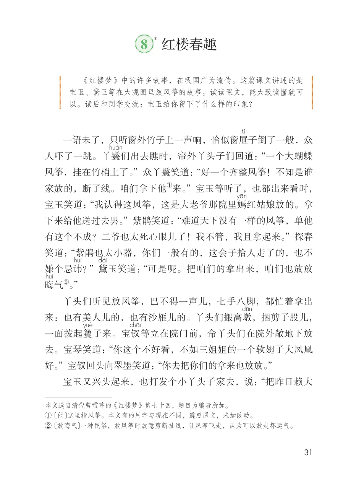
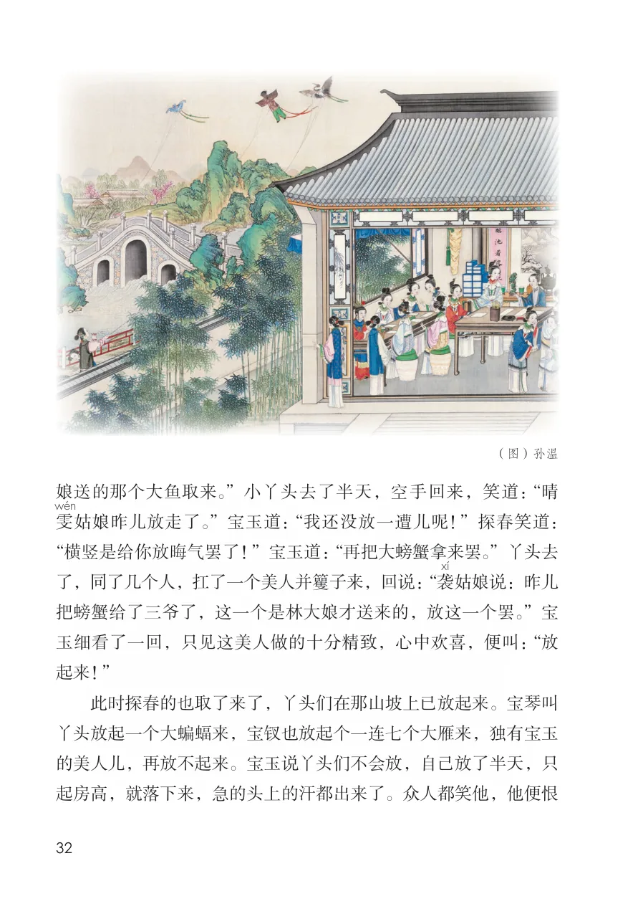
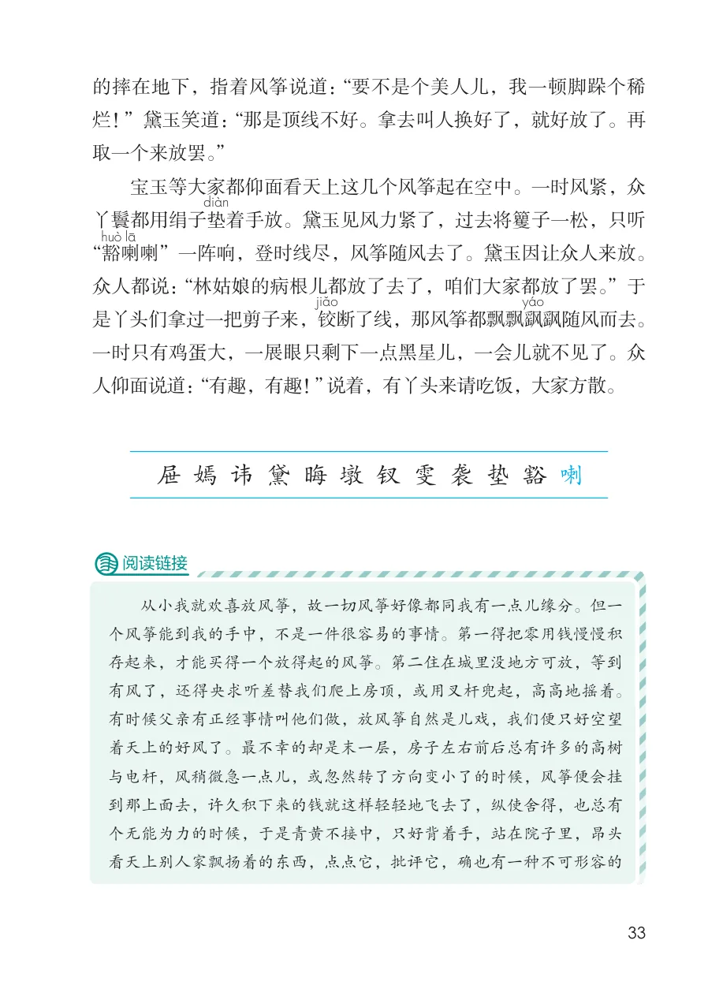
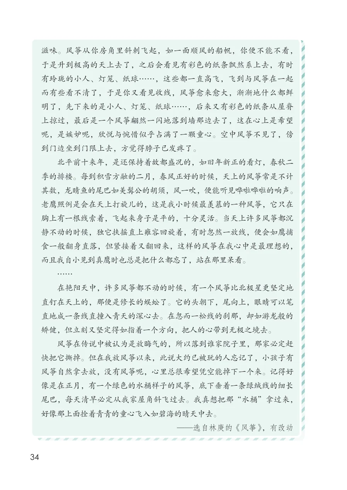

展开章节菜单
*8 红楼春趣
一语未了，只听窗外竹子上一声响，恰似窗屉
子倒了一般，众
人吓了一跳。丫鬟
们出去瞧时，帘外丫头子们回道：“一个大蝴蝶
风筝，挂在竹梢上了。”众丫鬟笑道：“好一个齐整风筝！不知是谁
家放的，断了线。咱们拿下他
宝玉笑道：“我认得这风筝，这是大老爷那院里嫣
红姑娘放的。拿
下来给他送过去罢。”紫鹃笑道：“难道天下没有一样的风筝，单他
有这个不成？二爷也太死心眼儿了！我不管，我且拿起来。”探春
笑道：“紫鹃也太小器，你们一般有的，这会子拾人走了的，也不
？”黛
玉笑道：“可是呢。把咱们的拿出来，咱们也放放
丫头们听见放风筝，巴不得一声儿，七手八脚，都忙着拿出
来：也有美人儿的，也有沙雁儿的。丫头们搬高墩
，捆剪子股儿，
子来。宝钗
等立在院门前，命丫头们在院外敞地下放
去。宝琴笑道：“你这个不好看，不如三姐姐的一个软翅子大凤凰
好。”宝钗回头向翠墨笑道：“你去把你们的拿来也放放。”
宝玉又兴头起来，也打发个小丫头子家去，说：“把昨日赖大
① 〔他〕这里指风筝。本文有的用字与现在不同，遵照原文，未加改动。
② 〔放晦气〕一种民俗，放风筝时故意剪断扯线，让风筝飞走，认为可以放走坏运气。
查看教材原页（保留全部图片、注音与原始排版）

娘送的那个大鱼取来。”小丫头去了半天，空手回来，笑道：“晴姑娘昨儿放走了。”宝玉道：“我还没放一遭儿呢！”探春笑道：
“横竖是给你放晦气罢了！”宝玉道：“再把大螃蟹拿来罢。”丫头去了，同了几个人，扛了一个美人并籰子来，回说：“袭
姑娘说：昨儿把螃蟹给了三爷了，这一个是林大娘才送来的，放这一个罢。”宝玉细看了一回，只见这美人做的十分精致，心中欢喜，便叫：“放起来！”
此时探春的也取了来了，丫头们在那山坡上已放起来。宝琴叫丫头放起一个大蝙蝠来，宝钗也放起个一连七个大雁来，独有宝玉的美人儿，再放不起来。宝玉说丫头们不会放，自己放了半天，只起房高，就落下来，急的头上的汗都出来了。众人都笑他，他便恨
查看教材原页（保留全部图片、注音与原始排版）

的摔在地下，指着风筝说道：“要不是个美人儿，我一顿脚跺个稀
烂！”黛玉笑道：“那是顶线不好。拿去叫人换好了，就好放了。再
取一个来放罢。”
宝玉等大家都仰面看天上这几个风筝起在空中。一时风紧，众
着手放。黛玉见风力紧了，过去将籰子一松，只听
丫鬟都用绢子垫
“豁
喇
喇”一阵响，登时线尽，风筝随风去了。黛玉因让众人来放。
众人都说：“林姑娘的病根儿都放了去了，咱们大家都放了罢。”于
断了线，那风筝都飘飘飖
飖随风而去。
是丫头们拿过一把剪子来，铰
一时只有鸡蛋大，一展眼只剩下一点黑星儿，一会儿就不见了。众
人仰面说道：“有趣，有趣！”说着，有丫头来请吃饭，大家方散。
从小我就欢喜放风筝，故一切风筝好像都同我有一点儿缘分。但一
个风筝能到我的手中，不是一件很容易的事情。第一得把零用钱慢慢积
存起来，才能买得一个放得起的风筝。第二住在城里没地方可放，等到
有风了，还得央求听差替我们爬上房顶，或用叉杆兜起，高高地摇着。
有时候父亲有正经事情叫他们做，放风筝自然是儿戏，我们便只好空望
着天上的好风了。最不幸的却是末一层，房子左右前后总有许多的高树
与电杆，风稍微急一点儿，或忽然转了方向变小了的时候，风筝便会挂
到那上面去，许久积下来的钱就这样轻轻地飞去了，纵使舍得，也总有
个无能为力的时候，于是青黄不接中，只好背着手，站在院子里，昂头
看天上别人家飘扬着的东西，点点它，批评它，确也有一种不可形容的
查看教材原页（保留全部图片、注音与原始排版）

滋味。风筝从你房角里斜刺飞起，如一面顺风的船帆，你便不能不看，于是升到极高的天上去了，之后会看见有彩色的纸条飘然系上去，有时有玲珑的小人、灯笼、纸球……，这些都一直高飞，飞到与风筝在一起而有些看不清了，于是你又看见收线，风筝愈来愈大，渐渐地什么都鲜明了，先下来的是小人、灯笼、纸球……，后来又有彩色的纸条从屋脊上掠过，最后是一个风筝翩然一闪地落到墙那边去了，这在心上是希望呢，是嫉妒呢，欣悦与惋惜似乎占满了一颗童心。空中风筝不见了，傍到门边坐到门限上去，方觉得脖子已发疼了。
北平前十来年，是还保持着故都盛况的，如旧年新正的看灯，春秋二季的排楼。每到积雪方融的二月，春风正好的时候，天上的风筝常是不计其数，龙睛鱼的尾巴如美髯公的胡须，风一吹，便能听见哗啦哗啦的响声。老鹰照例是会在天上打旋儿的，这是我小时候最羡慕的一种风筝，它只在胸上有一根线索着，飞起来身子是平的，十分灵活。当天上许多风筝都沉静不动的时候，独它扶摇直上雍容回旋着，有时忽然一放线，便会如鹰捕食一般翻身直落，但紧接着又翻回来，这样的风筝在我心中是最理想的，而且我自小见到真鹰时也总是把什么都忘了，站在那里呆看。
……
在艳阳天中，许多风筝都不动的时候，有一个风筝比北极星更坚定地直钉在天上的，那便是修长的蜈蚣了。它的头朝下，尾向上，眼睛可以笔直地成一条线直撞入青天的深心去。在忽而一松线的刹那，却如游龙般的矫健，但立刻又坚定得如指着一个方向，把人的心带到无极之境去。
风筝在传说中被认为是放晦气的，所以落到谁家院子里，那家必定赶快把它撕掉。但在我放风筝以来，此说大约已被玩的人忘记了，小孩子有风筝自然拿去放，没有风筝呢，心里总很希望凭空能掉下一个来。记得好像是在正月，有一个绿色的水桶样子的风筝，底下垂着一条绿绒线的细长尾巴，每天清早必定从我家屋角斜飞过去。我真想把那“水桶”拿过来，好像那上面拴着青青的童心飞入如碧海的晴天中去。
查看教材原页（保留全部图片、注音与原始排版）
